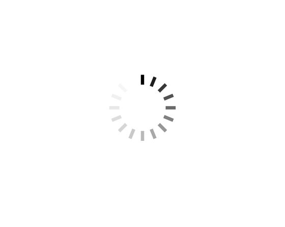

I'm a frontend software engineer at Cisco Meraki, and I'm interested in software development for social good.
I graduated with a BS in Computer Science from Cornell University in 2023. At Cornell, I led the firmware team for Combat Robotics at Cornell, where we built robots that competed to the death. I was also a developer on CUSail, building an autonomous sailboat for the SailBot International Robotic Sailboat Regatta. Beyond engineering, I was involved in Cornell Wushu and the Alpha Phi Omega Gamma chapter.
Currently, I'm a violinist performing with Symphony Parnassus. I'm also a volunteer mentor for high school students through Minds Matter. If you'd like to connect or learn more about my work, feel free to email me at keri.tenerowicz[at]gmail.com!